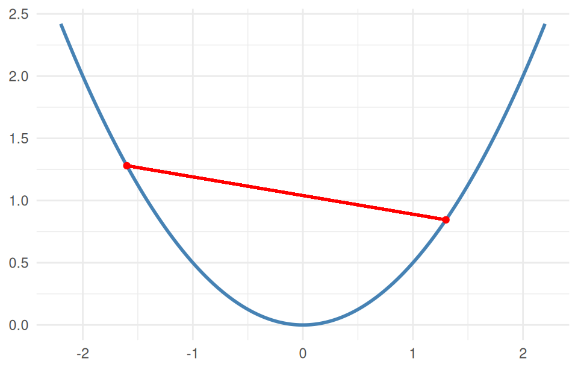

1 Introduction to Convex Optimization
NoteWhat this chapter is for
The big picture before we touch code: what an optimization problem is, what makes one convex, why convexity is such good news, and where these problems show up in statistics and machine learning.
1.1 Optimization is everywhere in statistics
Estimation is often optimization. We maximize a likelihood, minimize a loss, or penalize a fit to trade bias for variance. Ordinary least squares, ridge and lasso, logistic regression, support vector machines, maximum-entropy models, portfolio selection — each is “find the parameter that makes some criterion as small (or large) as possible, perhaps subject to constraints.”
The problems we study in this book have the form
\[ \begin{array}{lll} \mbox{minimize} & f_0(x) & \\ \mbox{subject to} & f_i(x) \leq 0, & i = 1,\ldots,m\\ & Ax = b, & \end{array} \]
with variable \(x \in \mathbf{R}^n\). Here \(f_0\) is the objective, the \(f_i \le 0\) are inequality constraints, and \(Ax = b\) are equality constraints. (To maximize, minimize the negative.)
1.2 What makes it convex
A problem is convex when the objective and inequality functions are convex and the equalities are linear. A function is convex if the line segment (chord) joining any two points on its graph lies on or above the graph:
\[f\big(\theta x + (1-\theta) y\big) \;\le\; \theta f(x) + (1-\theta) f(y), \qquad \theta \in [0,1].\]
Picture it as a bowl. A concave function is an upside-down bowl (\(-f\) is convex); an affine (flat) function is both. We minimize convex functions and maximize concave ones.
1.3 Why convexity is such good news
Convex problems have properties that make them a joy to work with:
- Every local optimum is global. No getting stuck in a bad valley — if you find a solution, it is the solution.
- The feasible region is convex (an intersection of convex sets), so the search space is well-behaved.
- They are solved reliably and fast by mature algorithms, even when the problem is nonlinear or nondifferentiable, and at scale.
This is exactly why it is worth recognizing — or reformulating into — a convex problem: you trade the uncertainty of general optimization for a global guarantee.
1.4 Convex problems in statistics and machine learning
A small sample of methods that are, under the hood, convex optimization:
- ordinary, nonnegative, and constrained least squares;
- ridge, lasso, elastic-net, and other penalized regressions;
- logistic regression and support vector machines;
- quantile and Huber (robust) regression;
- isotonic and shape-constrained fitting;
- maximum-entropy and log-concave density estimation;
- portfolio optimization and many problems in finance, signal processing, and control.
New methods join the list every year — and CVXR lets you build them without writing a custom solver.
1.5 What about non-convex problems?
Not everything is convex — in fact most problems are not, and they are harder in general (no global guarantee). Two responses recur in this book:
- A non-convex problem often has a convex relaxation — an approximation you can solve that yields a useful bound or solution.
- Some problems are non-convex but smooth, and a nonlinear solver will find a good local solution; CVXR handles these too (Chapter 14).
1.6 The plan
The rest of the book is hands-on. We start gently — your first CVXR problems (Chapter 2) — then learn the one rule that governs what CVXR will accept (Chapter 3), survey the landscape of problem types (Chapter 4), and work through regression, classification, finance, integer, and nonlinear examples. By the end you will translate a problem from a paper or textbook directly into working R.
Read on — and run the code as you go.